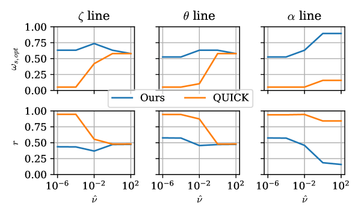

Figure 1: Architecture of SPECTRA. The main pipeline contains six stages from normalization to quantile-aware denormalization, while insets (a)–(d) detail MTPD, ECS, STSSE, and SBE...
Figure 1: Surrogate model architecture: the three-stage inference cycle. (a) Stage 1 (forward model) : a conditional U-Net maps a single-channel geometry mask, with the five scalar...
如何在保持物理求解精度的同时获得可微、低内存、可嵌入优化循环的 neoclassical transport 求解器？
对当前主题的关键意义在于：最小实验是将 yancc 生成的 transport flux/profile sensitivity 作为 neural surrogate 的辅助监督，比较无物理层、有离线特征和端到端可微约束三种设置。
方法与关键创新

Figure 1: Smoothing factor r r for the block diagonal smoothers in each coordinate, comparing the widened upwind stencil used in yancc against the QUICK scheme on the monoenergetic...
Figure 1: Architecture of SPECTRA. The main pipeline contains six stages from normalization to quantile-aware denormalization, while insets (a)–(d) detail MTPD, ECS, STSSE, and SBE...
Figure 1 : Overview of the proposed approach in comparison with existing face recognition paradigms. ArcFace [ 12 ] trains an embedding network for identity without quality awarene...
用质量估计驱动软门控和 dropout，让模型训练时主动经历质量退化与模态缺失。
阅读时需要把方法设计与主要结果一起看：单模态缺失下仍保持相对稳定的 VA 估计性能。
融合模型的预测能否反推到合理物理参数或状态，并标出低可信区域？
对当前主题的关键意义在于：最小实验是将可见光 ROI 风险、低频诊断和边界 surrogate 状态连接，通过 cycle loss 约束可解释中间状态。
方法与关键创新
Figure 1: Surrogate model architecture: the three-stage inference cycle. (a) Stage 1 (forward model) : a conditional U-Net maps a single-channel geometry mask, with the five scalar...
Figure 1 : Overview of the proposed approach in comparison with existing face recognition paradigms. ArcFace [ 12 ] trains an embedding network for identity without quality awarene...
Figure 1 : Overview of the proposed approach in comparison with existing face recognition paradigms. ArcFace [ 12 ] trains an embedding network for identity without quality awarene...
Figure 1 : Overview of the DINOde framework for OVSS . We propose a continuous alignment strategy that bridges the gap between text embeddings and DINO visual features. The illustr...
![Figure 1: Surrogate model architecture: the three-stage inference cycle. (a) Stage 1 (forward model) : a conditional U-Net maps a single-channel geometry mask, with the five scalar control parameters injected via FiLM, to the four-channel plasma state ( T e , T i , n e , u a T_{e},T_{i},n_{e},u_{a} ); the fields are outputs of the model, not inputs. (b) Stage 2 (inverse model) : the control parameters are recovered from a target field by optimizing through the frozen forward model, warm-started by the learned pseudo-inverse G ψ G_{\psi} (Fig. 2 ) evaluated on the observed fields. (c) Stage 3 (cycle consistency) : the recovered parameters are passed back through the frozen model; the cycle loss validates that the round-trip preserves the target field, a self-supervised metric requiring no ground-truth parameters. The forward model F θ F_{\theta} and pseudo-inverse G ψ G_{\psi} used here are produced beforehand by the training-time regularizer of Fig. 2 .](../assets/figures/bd28c5fc78b8018d.png)
![Figure 1 : Overview of the proposed approach in comparison with existing face recognition paradigms. ArcFace [ 12 ] trains an embedding network for identity without quality awareness; AdaFace [ 19 ] introduces quality awareness explicitly via norm-based margins; our approach trains a multimodal model with Quality-Aware Adaptive Fusion (QAAF) on valence-arousal (VA) estimation from face video and audio, where backbone features emerge as a soft biometric signal with implicit, learned quality awareness. These features correctly distinguish impostor pairs that ArcFace false-accepts, showing that VA training implicitly encodes identity-discriminative information complementary to static appearance.](../assets/figures/5d060190f9d38af5.png)